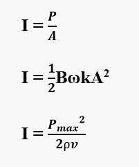
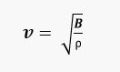
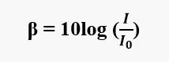
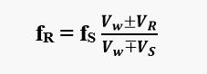

Acoustics
-
Sound and Hearing
- Sound – longitudinal waves traveling thru solid, liquid or gas.
- Acoustics – branch of physics that deals with the relationship between the physical characteristics of a sound like amplitude, frequency, wavelength, intensity, etc and the human sense of hearing
- Acoustic Phenomena – the events that involve sound as it affects human sound perception like beats, interference, and Doppler’s effect
- Audio Frequency (AF) – frequency of waves ranging from 20 to 20,000 Hz which human ear can respond to.
- Ultrasonics – those waves of frequencies above the AF.
- Infrsonics – those waves of frequencies below the AF.
Characteristics of Sound
- Pitch or Tone
- A property of sound directly related to frequency.
- Quality of sound
- A property of sound directly associated with the complexity of the wave form
- • Complexity – a measure of the deviation of a sound wave from the ideal smooth sinusoidal wave.
- Loudness of Sound
- A characteristic of sound directly related to the amplitude of the waves.
- Refers to the listener’s subjective perception of the magnitude of a sound sensation or the strength of the sensation received by the ear.
- • High amplitude sound waves are loud sound.
- Intensity of Sound (I)
- The time rate at which sound energy is transmitted by the waves per unit area of a surface placed perpendicular to the direction of the waves.
- Power transmitted per unit area (watts/m^2).
- 
- Where:
- v = velocity
- ⍴ = density
- Pmax = pressure amplitude in Pa
- Pmax = BkA
- 
- B = bulk modulus
- k = wave number
- A = displacement amplitude
- • Pressure amplitude – maximum variation from atmospheric pressure of the air pressure near the eardrums
- Maximum pressure amplitude – the loudest sound that the human ear can tolerate (30 Pa).
- Minimum pressure amplitude – the faintest sound that can be heard by the human ear (3 x 10-5 Pa).
Intensity Level or Noise Level (Β)
- Logarithmic evaluation of the intensity of sound waves.
- The unit is decibel (dB).
- 
- Where:
- I0 = reference intensity = 10-12 W/m^2
- • Threshold of hearing – minimum noise level that can be heard by the ear (0dB)
- • Threshold of pain – maximum noise level that the human ear can withstand (120dB)
-
Acoustic Phenomena
1. Beats
- - Variation in amplitude of sound waves due to the alternate constructive and destructive interference of two sound waves of slightly different frequencies reaching the ears at the same time.
- Beat Frequency (fB) – frequency of the variation
- fB = |f1-f2|
- Where:
- f1 = slightly higher frequency
- f2 = lower frequency
2. Doppler’s Effect
- - The change in frequency of the sound as it is received due to the relative motion between the source and the receiver.
- 
- Where:
- fR = frequency of sound received by the listener/receiver
- fS = frequency of sound emitted by the source
- Vw = speed of the wave
- VR = speed of the receiver
- +VR if receiver is moving towards the source
- -VR if receiver is moving away from the source
- VS = speed of the source
- +VS if source is moving away from the receiver
- -VS if source is moving towards the receiver
- • In cases where the source and the receiver are not moving along the same line, VS and VR are the components of the actual velocities of the source and the receiver along the line connecting them at the instant sound was emitted.

-
Sample Problems
- 1. Point A and B located at 4 meters and 9 meters from a source of the sound. If IA and IB are intensity at point A and point B, then IA : IB =…
Known: The distance of point A from a source of sound (rA) = 4 meters. A distance of point B from the source of sound (rB) = 9 meters. The intensity of sound at point A = IA. The intensity of sound at point B=IB
Wanted: IA : IB
- 2. The intensity of a source of sound is 10−9 Wm−2. Io = 10−12 Wm−2. What is the sound level of 10 sources of sounds?
Known: I = 10-9 W/m2, Io = 10-12 W/m2, x = 10
Wanted: Sound level (β)
- 3. The sound level of a source of sound is 10 dB. What is the intensity of 1000 sources of sound? The minimum intensity Io = 10−12 Wm−2.
Known: β = 10 dB, Io = 10-12 W/m2, x = 1000
Wanted: Intensity
- 4. The sound level of A is 40 dB, and the sound level of B is 60 dB. Io = 10-12 W m-2. Determine 100βA : 10βB.
Known: The sound level of A = 40 dB, The sound level of B = 60 dB, Io = 10-12 W m-2.
Wanted: 100βA : 10βB
- 5. The sound intensity of a source of sound is 6 x 10-6 W/cm2. If the sound intensity level increased by 10 db, determine the intensity of sound.
Known: Intensity (I) = 6 x 10-6 W/cm2, Io = 10-12 W/m2 = 10-12 W / 104 cm2 = 10-16 W/cm2
Wanted: The intensity of sound
-
Solutions
- 1. IA rA2 = IB rB2, IA 42 = IB 92, IA 16 = IB 81, IA / IB = 81/16
- 2.
β=10 log 10-9/10-12
β=10 log 103
β=(3)(10)(log 10)
β=30 dB
β 10=TI 1 source + 10 log x
β=30 + 10 log 10
β=30 + 10 log 101
β=30 + (1)(10)(log 10)
β=30 + 10
β=40 dB
- 3. The intensity of a source of sound :
β=10 log I/Io
10=10 log I/10-12
10/10=log I/10-12
1=log I/10-12
Antilog 1=I/10-12
101=I/10-12
I=(101)(10-12)
I=10-11 W/m2
- 4. The sound level of 100 A :
β = 40 + 10 log 100
β = 40 + 10 log 102
β = 40 + (2)(10)(log 10)
β = 40 + (2)(10)(1)
β = 40 + 20
β = 60 dB
The sound level of 10 B :
β = 60 + 10 log 10
β = 60 + 10 log 101
β = 60 + (1)(10)(log 10)
β = 60 + (1)(10)(1)
β = 60 + 10
β = 70 dB
βA : βB
60 : 70
6 : 7
- 5. The addition of the sound intensity of 10 W/m2 = 10-3 W/cm2 is equivalent to the addition of the sound intensity level of 10 dB. The addition of sound intensity of 102 W/m2 = 10-2 W/cm2 is equivalent to the addition of sound intensity level of 20 dB. And so on.
- If the intensity level is increased by 10 dB, the intensity increases by 10-3 W/cm2. So the intensity becomes 6 x 10-6 W/cm2) + (10-4 W/cm2) = (6 x 10-6 W/cm2) + (100 x 10-6 W/cm2) = 106 x 10-6 W/cm2.